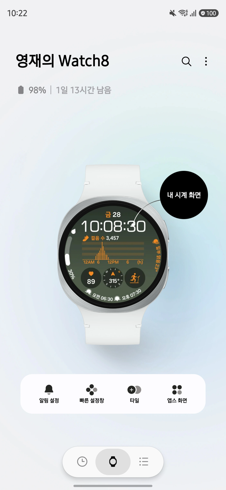
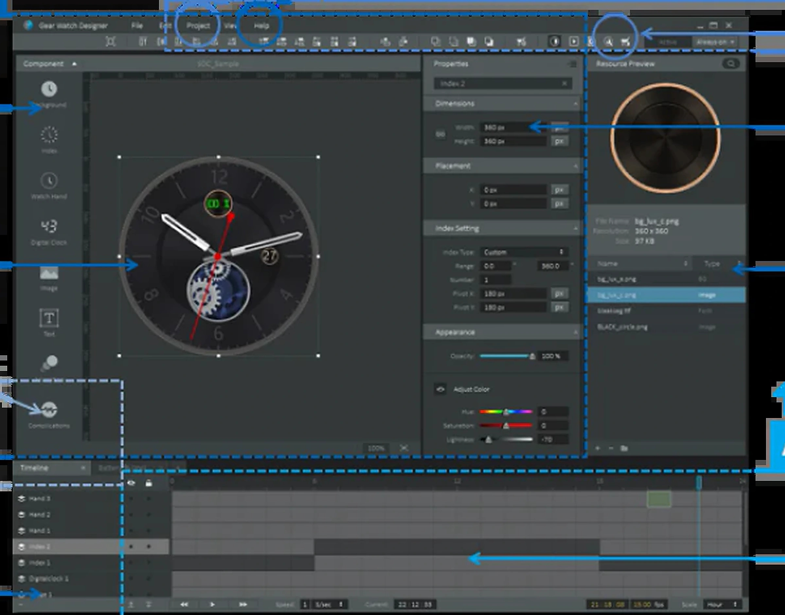
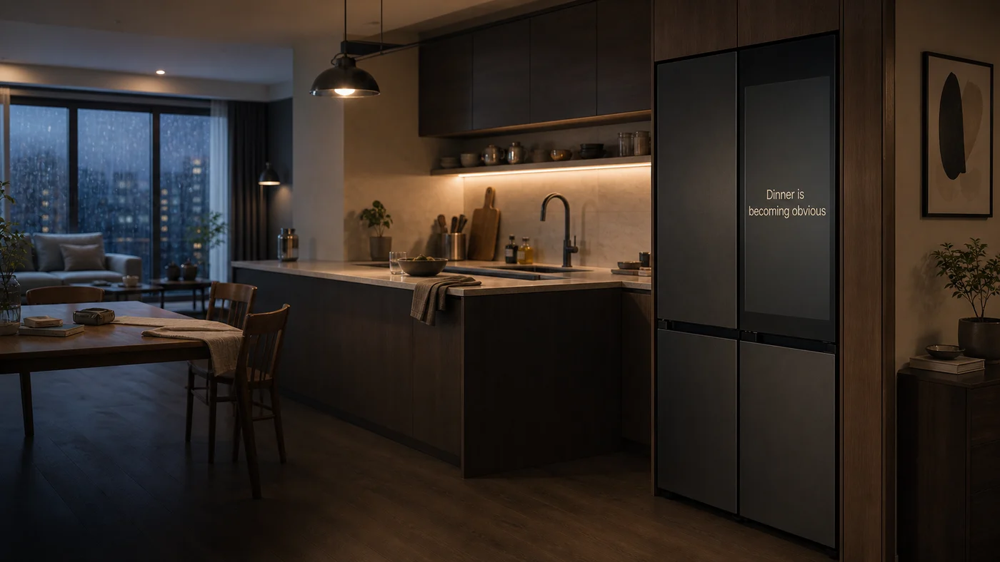

삼성전자 · UXSamsung Electronics · UX
민영재Youngjae Meen
Principal UX Designer
제품의 UX 방향을 정하고 핵심 동작은 직접 설계합니다. 모바일과 웨어러블에서 쌓은 경험을 바탕으로, 이제는 여러 사람이 기기와 공간을 함께 쓰는 상황까지 살핍니다.I set UX direction and design the interactions that make it work. My practice grew out of mobile and wearables and now extends to the devices and spaces people share at home.
소개와 경력About & experience

Galaxy Wearable
워치 상태 확인과 자주 쓰는 기능을 한곳에Watch status and frequent actions in one place
- 경력Experience
- 삼성전자 · 2009–현재Samsung Electronics · 2009–present
- 최근 주요 작업Recent work
- Galaxy Wearable UX
- 학위Education
- 데이터사이언스융합 · 공학석사 · 2023Master’s in Engineering, Data Science Convergence · 2023
포트폴리오Portfolio
주요 프로젝트Selected work
개인 기기의 핵심 동작에서 여러 사람이 함께 쓰는 생활 경험까지, 문제의 범위를 넓혀 온 작업입니다.From designing core interactions on personal devices to asking what changes when a whole household shares them.

제품 오너 / PM · 2015–2019Product owner / PM · 2015–2019
Galaxy Watch Designer
워치페이스 제작부터 배포까지From making a watch face to publishing it
워치페이스 편집기에 그치지 않고 실제 워치에서의 테스트와 배포까지 제품 범위에 넣었습니다. 5인 팀이 함께 만든 도구는 2015년 12월 베타로 공개됐습니다.I set the scope beyond editing: designers needed to test on a watch and publish their work. Our five-person team released the tool in beta in December 2015.

설계 콘셉트 이미지 · 미출시Design concept illustration · Unshipped03 · AI Home UX 전략 · 개인 콘셉트03 · AI Home UX strategy · Independent concept
AI Family Hub
가족이 함께 쓰는 AI를 설계하다Designing AI for a shared home
앱 대신 ‘오늘 저녁을 어떻게 준비할까?’에서 출발했습니다. 가족과 기기를 연결하기 전에, 공용 화면에서 누가 어떤 정보를 볼 수 있는지부터 정했습니다.I started with a household goal—getting dinner ready—rather than an app. Before connecting people and devices, I decided who should be able to see what on the shared screen.

UX 프로젝트 리드 · 2019UX project lead · 2019
Galaxy Watch Active2
물리 베젤이 없는 원형 화면에서 탐색 방향을 정하고, 출시된 터치 베젤의 동작과 햅틱을 설계했습니다.I led navigation design for a round display without a physical bezel and shaped the Touch Bezel’s motion and haptics for release.

Core UX 디자이너 · 2013–2015Core UX designer · 2013–2015
Tizen Phone
인도 현지 조사를 바탕으로 홈, 잠금 화면, 멀티태스킹을 직접 설계했습니다.Drawing on field research in India, I designed Home, the lock screen, and multitasking.
연구Research
응용데이터사이언스Applied data science
공학석사 학위논문 · 2023Master’s thesis in engineering · 2023
리뷰 텍스트로 평점 예측Predicting ratings from review text
앱 리뷰 376만 건으로 2단 분류 모델을 비교했습니다. 최고 정확도는 75.78%로, 가장 우수한 단일 단계 모델보다 6.25%p 높았습니다.I compared two-stage classifiers using 3.76 million app reviews. The best reached 75.78% accuracy, 6.25 percentage points above the best single-stage model.
아카이브Archive
다른 제품과 개인 작업Other work & explorations
카메라 소프트웨어와 기기 간 협업, 직접 만든 게임을 모았습니다.Camera software, cross-device collaboration, and games I built.
아카이브 전체 보기Explore the archive민영재
전기전자공학에서 UX로, 그리고 데이터사이언스로. 기술을 이해하고 직접 만들어 보는 태도는 지금도 제 일의 바탕입니다.From electrical engineering to UX and applied data science, understanding the technology and making things myself have stayed central to my work.
프로필 보기Read my profile ↗